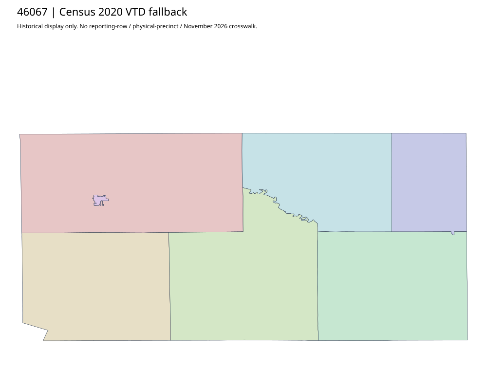

304 ordered indexHutchinson | 46067
Official election-district and precinct-information pages acquired after honoring original HTML base href. Initial double-path404 attempts remain. Literal precinct PNG request403 is retained with full body. Complete Resolution2022-002 explicitly combines precincts for2022 Primary only; it is not geometry or a current general-election partition. Census2020 fallback retained.
4 priority / 6 full historical observations. Parent is a summary ancestor, not additive to leaves. No physical feature matches or current reporting crosswalk approved.
Acquired shared-parent assets
No complete county precinct-map original acquired from this bounded chain. Use qualified fallback; roster/landing/error bodies are retained as evidence.
Administrative/district supplement (not a precinct polygon match): map-46067-867e0b1c8302
Census2020 fallback
7 native historical VTD features. Entire785-feature ZIP original retained once, all66 counties. Yankton has one countywide VTD. No current/reporting allocation. complete original gzip

Full binary/attribute/geometry QA
Observed authority/acquisition routes
Complete SOS authority fields including original blank/masked values: parent inventory. No contacts were sent.
Ordered full children
- Precinct-02 | 940 source votes | priority
- Precinct-04 | 757 source votes | priority
- Precinct-01 | 709 source votes | priority
- Precinct-03 | 540 source votes | priority
- Precinct-05 | 454 source votes | remainder
- Precinct-06 | 329 source votes | remainder